工程材料与机械制造基础（第3版）
Fundamentals of Machining
01
切削加工：利用切削刀具从工件毛坯上切除多余材料，以获得具有一定形状、尺寸、精度和表面粗糙度的零件的加工方法。
可分为机械加工和钳工两部分。
机械加工：通过人工操纵机床来实现。主要方法有车削、钻削、镗削、铣削、刨削、磨削等。
钳工：在钳工工作台上通过手持工具进行。包括划线、錾削、锯割、锉削、刮研、钻孔、铰孔、攻套螺纹、装配和维修等。
01
① 尺寸公差等级可达 IT12~IT3 甚至更高，表面粗糙度 \(Ra = 25 \sim 0.008\ \mu\mathrm{m}\)。
② 一般不受零件形状和尺寸限制，只要能在机床上装夹，大多可切削加工。可加工外圆、内圆、锥面、平面、螺纹、齿形及空间曲面等。
③ 常规条件下，切削加工的生产率一般高于其他加工方法。
④ 刀具和工件须具一定强度和刚度，且刀具材料的硬度必须大于工件材料的硬度。
Cutting Motion & Parameters
02
刀具与工件之间的相对运动称为切削运动，包括主运动和进给运动。
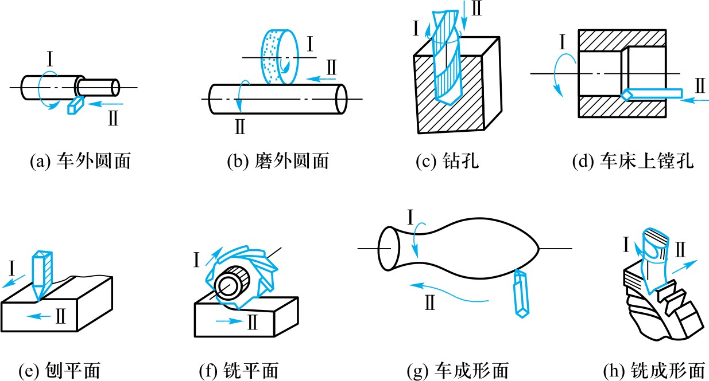
02
主运动（图中I）：切下切屑所需的最基本的运动。速度高、消耗功率多。主运动一般只有一个。
例如：车削时工件的旋转；钻削时钻头的旋转；铣削时铣刀的旋转；磨削时砂轮的旋转；刨削时刀具的直线往复。
进给运动（图中II）：使多余材料不断被投入切削，从而加工出完整表面所需的运动。进给运动可以有一个或几个。
例如：车削时车刀的纵向和横向移动；钻削时钻头的轴向移动；铣削时工件的各向移动。
02
待加工表面：工件上等待切除的表面。
过渡表面：工件上正在被切削刃切除的表面。
已加工表面：工件上经刀具切削后形成的表面。
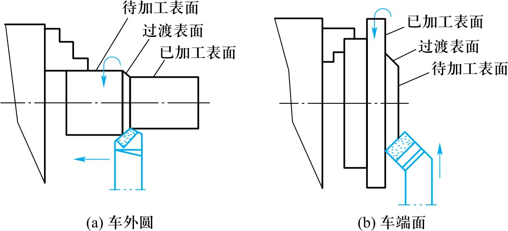
02
切削用量是衡量切削运动大小的参数，包括切削速度 \(v_c\)、进给量 \(f\)和背吃刀量 \(a_p\)。
02
主运动的线速度称为切削速度。
主运动为转动时（车削、铣削、钻削、磨削）：\[v_c = \frac{\pi d n}{1000 \times 60}\]
\(d\)——工件或刀具直径（mm）；\(n\)——工件或刀具转速（r/min）。
主运动为往复直线运动时（刨削）：\[v_c = \frac{2L n_r}{1000 \times 60}\]
\(L\)——行程长度（mm）；\(n_r\)——每分钟往复次数（str/min）。
02
在单位时间内，刀具在进给方向上相对工件的位移量。
车削时：指工件每转一周，刀具沿进给方向所移动的距离，单位 mm/r。
刨削时：指刀具每往复一次，工件移动的距离，单位 mm/str。
铣削时：还规定每齿进给量 \(f_z\)，即铣刀每转过一个齿工件移动的距离，单位 mm/z。
02
垂直于进给运动方向上测量的主切削刃切入工件的深度。
车外圆时：\[a_p = \frac{d_w - d_m}{2}\]
\(d_w\)——工件待加工表面直径（mm）；\(d_m\)——工件已加工表面直径（mm）。
02
加工工艺过程按照加工性质和目的不同，划分为粗加工、半精加工、精加工、精密加工和超精密加工五个阶段。
02
粗加工（IT12~IT11, Ra 25~12.5μm）：快速切除多余材料→接近零件形状。方法：粗车、粗铣、粗镗、粗刨、钻孔等。
半精加工（IT10~IT9, Ra 6.3~3.2μm）：提高精度、降低粗糙度，为精加工做准备。方法：半精车、半精铣、扩孔等。
精加工（IT8~IT6, Ra 1.6~0.2μm）：使一般零件达到技术要求。方法：精车、精铣、精刨、精镗、粗磨、粗铰等。
精密加工（IT5~IT3, Ra 0.1~0.008μm）：进一步提高精度。方法：研磨、珩磨、超精加工、抛光等。
Cutting Tool Materials
03
① 高的硬度：必须高于工件材料的硬度，常温下一般应在 60HRC 以上。
② 足够的强度和韧性：承受切削力和振动，防止脆性断裂和崩刃。
③ 高的耐磨性：抵抗磨损的能力。一般情况下硬度越高耐磨性越好。
④ 高的耐热性（红硬性）：在高温下仍能保持硬度、强度、韧性和耐磨等性能。
⑤ 良好的工艺性和经济性：便于制造，追求高性价比。
03
碳素工具钢（T8A~T13A）：≥62HRC，红硬性200°C。用于手动工具（锉刀、锯条）。
合金工具钢（9SiCr、CrWMn）：≥62HRC，红硬性250~300°C。热处理变形小。
用于低速成形刀具（丝锥、板牙、铰刀）。
高速钢（W18Cr4V、W6Mo5Cr4V2）：≥63HRC，红硬性550~600°C。
用于中速及形状复杂刀具（钻头、铣刀、拉刀、齿轮刀具）。
03
硬质合金：88.5~92.3HRA，红硬性800~1000°C。粉末冶金成形，多镶片使用，性能较脆。
传统分两大类：YG类（WC+Co）→韧性较好，适于加工铸铁等脆性材料。
YT类（WC+TiC+Co）→耐热耐磨好，适于加工钢件。
现行标准六大类：P（钢）、M（不锈钢）、K（铸铁）、N（非铁）、S（难加工）、H（淬硬）。
03
涂层刀具：TiC/TiN涂层，3200HV，红硬性1100°C。切削速度提高约30%，寿命提高2~5倍。
陶瓷（93~94HRA）：红硬性1200°C。硬度高于硬质合金，精加工可加工淬火钢。
立方氮化硼CBN（7300~9000HV）：红硬性1300~1500°C，优于陶瓷。
人造金刚石（约10000HV）：红硬性600°C。用于非铁金属精密加工，不宜切削钢铁。
Tool Structure
04
车刀是最常用、最简单和最基本的切削刀具。结构形式有整体式、焊接式、机夹式和机夹可转位式。
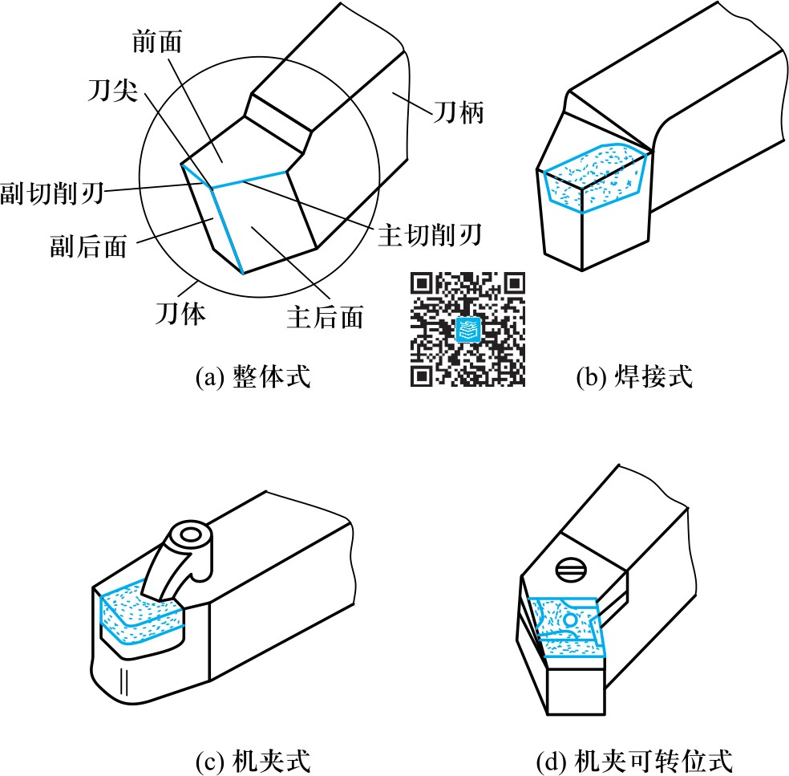
04
整体式：结构简单，对贵重刀具材料消耗较大。
焊接式：刚性好，灵活性大。但硬质合金刀片经高温焊接和刃磨后，易产生内应力和裂纹。
机夹式：避免焊接高温缺陷，提高切削性能，刀柄可多次使用。
机夹可转位式：多切削刃刀片，一个刃用钝后只需转位即可继续使用，经济效益好。
04
前面：切屑流出所经过的表面。
主后面：与工件过渡表面相对的表面。
副后面：与工件已加工表面相对的表面。
04
主切削刃：前面与主后面的交线，承担主要切削工作。
副切削刃：前面与副后面的交线，仅承担微量切削。
刀尖：主、副切削刃的交点。常磨成圆弧形或直线形过渡刃以强化刀尖。
Tool Reference Angles
05
切削平面：通过主切削刃上一点并与工件过渡表面相切的平面。
基面：通过主切削刃上一点并与该点切削速度方向相垂直的平面。
主剖面：通过主切削刃上一点并与主切削刃在基面上的投影相垂直的平面。
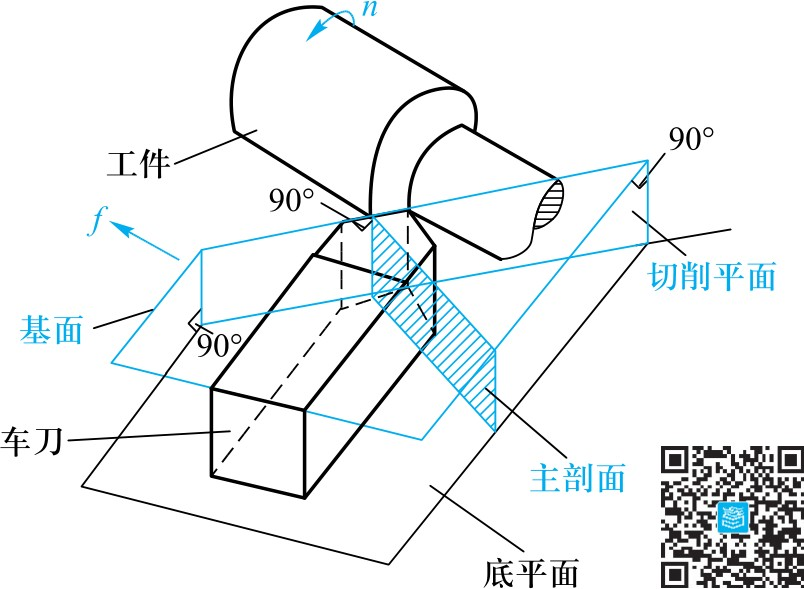
05
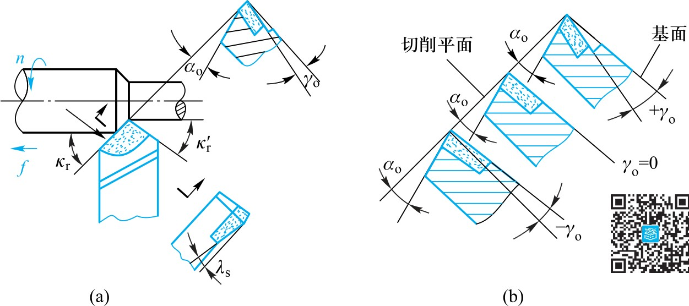
05
① 前角 \(\gamma_o\)：在主剖面中测量，前面与基面的夹角。增大→刀具锋利，切削变形和切削力减小。
② 后角 \(\alpha_o\)：在主剖面中测量，主后面与切削平面的夹角。适当→减小摩擦和刀具磨损。
③ 主偏角 \(\kappa_r\)：在基面中测量，主切削刃投影与进给方向的夹角。常用45°、60°、75°、90°。
④ 副偏角 \(\kappa'_r\)：在基面中测量，副切削刃投影与进给反方向的夹角。一般5°~15°。
⑤ 刃倾角 \(\lambda_s\)：在切削平面中测量，主切削刃与基面的夹角。刀尖最高时为正。
05
标注角度是在静止参考系中假定的理想条件。实际切削时这些条件会改变——实际角度称为工作角度。
05
刀尖高于工件回转轴线→前角增大，后角减小。刀尖低于轴线→相反。
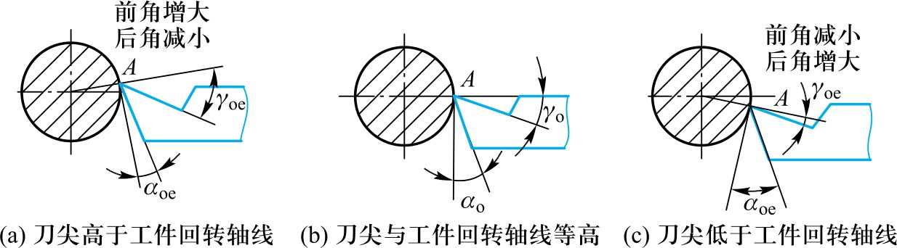
05
刀柄右偏→主偏角增大，副偏角减小。刀柄左偏→相反。
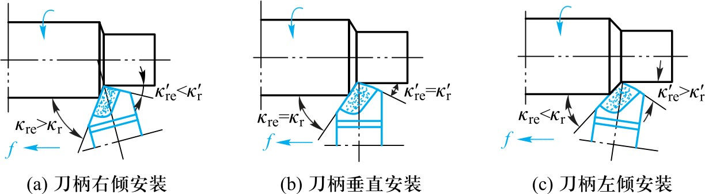
05
纵向走刀车外圆时，加工表面实际是螺旋面→切削平面和基面均偏转螺旋升角\(\psi\)。
工作前角 \(\gamma_{oe}\) 加大，工作后角 \(\alpha_{oe}\) 减小。车大螺距螺纹时必须考虑！
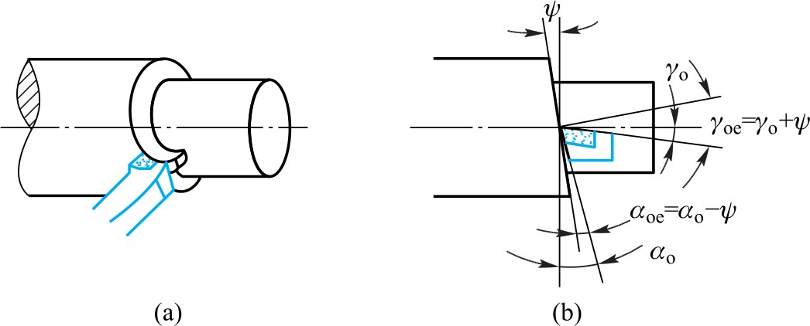
Cutting Process & Phenomena
06
塑性金属切削：弹性变形→塑性变形→挤裂→切离四个阶段。
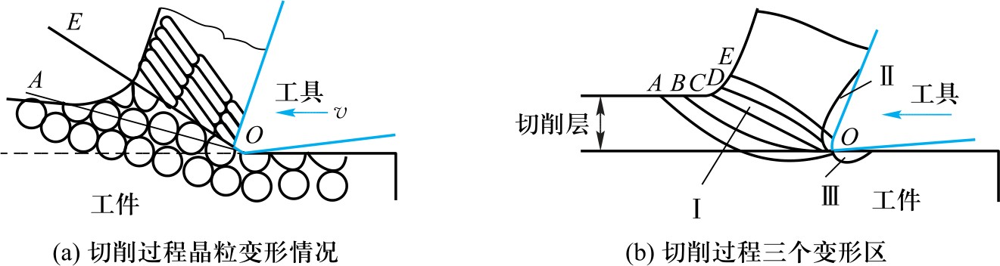
06
第I变形区（基本变形区）：切削层金属产生剪切滑移和大量塑性变形的区域。
第II变形区（摩擦变形区）：切屑与刀具前面摩擦的区域。对积屑瘤和刀具前面磨损影响大。
第III变形区（加工表面变形区）：工件已加工表面与刀具后面接触的区域。影响加工硬化和残余应力。
06
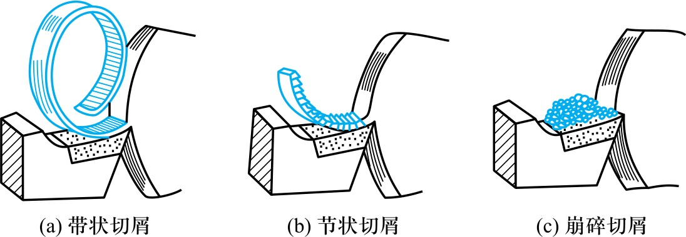
06
① 带状切屑：最常见，延绵长带状。条件：塑性金属+高速+小进给+大前角。切削力平稳、Ra小，但易缠绕需断屑。
② 节状切屑：粗加工中硬材料+大进给+低速+小前角。剪切应力超过抗剪强度→裂纹扩展。振动较大，质量较差。
③ 崩碎切屑：加工铸铁、黄铜等脆性材料→不经塑性变形直接脆断→不规则碎片。切削力变化大，刀具寿命低。
06
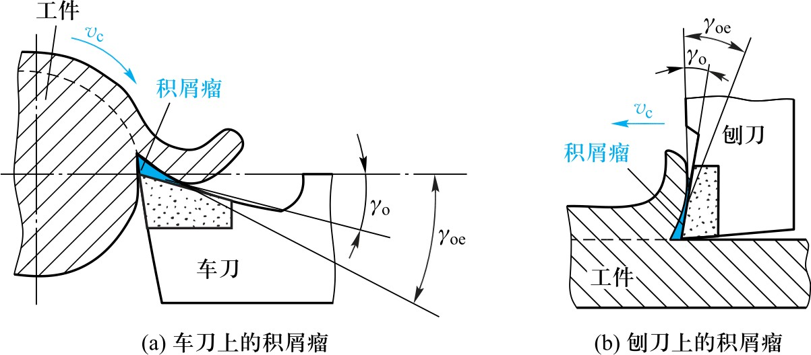
06
切削塑性金属+中等切削速度(\(v_c\)=5~60 m/min)→切屑底层金属黏结在刀具前面→形成积屑瘤。
积屑瘤硬度很高（一般为工件硬度的2~3倍），是一个反复长大、脱落的动态形成过程。
低速（<5 m/min）和高速（>60 m/min）时摩擦因数较小，一般不产生积屑瘤。
06
精加工应避免：积屑瘤不稳定→切削深度/厚度不断变化→影响精度。脱落碎片黏附→表面粗糙。
避免措施：改变切削速度、选用适当切削液。
粗加工可利用：积屑瘤硬度高于刀具→代替切削刃保护刀具；增大实际工作前角→切削轻快。
06
切削力来源于：弹塑性变形抗力 + 切屑-刀具摩擦 + 工件-刀具摩擦。
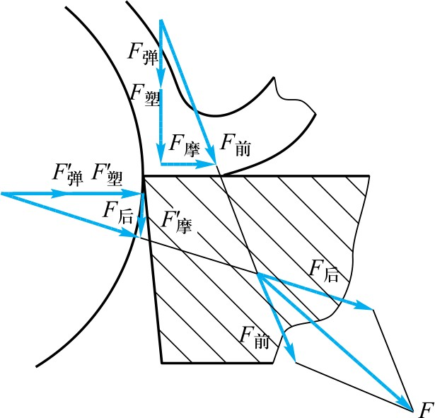
06
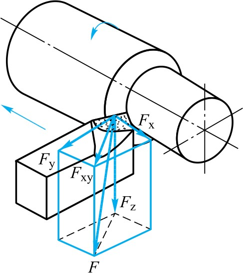
06
\[F^2 = F_x^2 + F_y^2 + F_z^2\]
① 主切削力 \(F_z\)（切向力）：占总力80%~90%。计算机床功率和刀具强度的主要依据。
② 进给抗力 \(F_x\)（轴向力）：消耗功率仅1%~5%。设计和验算进给机构的依据。
③ 背向分力 \(F_y\)（径向力）：方向速度为零故不做功。但作用于工件刚性最弱方向→易使工件弯曲变形。
06
工件材料：强度、硬度、韧度及塑性越大→切削力越大。
切削用量：\(a_p\)加倍→切削力也加倍；\(f\)加倍→切削力约增75%。
刀具角度：前角\(\gamma_o\)影响最大。加工塑性材料\(\gamma_o\)越大→切削力越小。
切削液：喷注切削液可减小摩擦→切削力降低。
06
\(F_y\)方向速度为零故不消耗功率，\(F_x\)消耗很小（1%~5%）可忽略。切削功率简化为：
\[P_m = 10^{-3}F_z v_c\]
\(P_m\)——切削功率（kW），\(F_z\)——主切削力（N），\(v_c\)——切削速度（m/s）。
机床电动机功率：\[P_e \geq P_m / \eta_m\]
\(\eta_m\)——机床传动效率，一般取0.75~0.85。
06
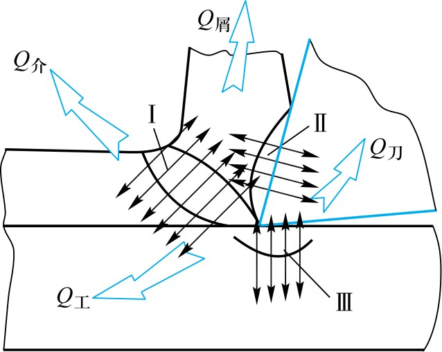
06
切削热来源于三个变形区：弹塑性变形热（I）+ 切屑-刀具摩擦热（II）+ 工件-刀具摩擦热（III）。
车削钢件：切屑带走50%~86%，工件带走10%~40%，刀具带走3%~9%。高速切削时刀体温度可达1000°C以上！
切削用量对温度影响：\(v_c\)影响最大（加倍→+20%~33%），\(f\)次之（加倍→约+10%），\(a_p\)最小（加倍→约+3%）。
06
从降低温度出发，应优先采用大的\(a_p\)、较小的\(f\)，最后确定合适的\(v_c\)。
其他措施：合理选择刀具角度、提高材料热导率、充分浇注切削液。
06
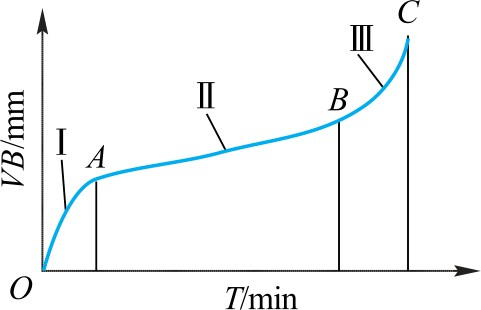
06
刀具磨损分三阶段：初期磨损（I）→正常磨损（II）→急剧磨损（III）。正常磨损后期、急剧磨损之前换刀重磨。
刀具耐用度 \(T\)：由开始切削至磨钝为止实际进行切削的时间（min）。
刀具寿命 \(t\)：从开始使用到完全报废的实际切削时间总和。\(t=nT\)（\(n\)为刃磨次数）。
切削速度对耐用度影响最大。适当加大前角、使用切削液→可提高\(T\)。
Quality & Productivity
07
加工精度：零件加工后的实际几何参数与理想几何参数的符合程度。
尺寸精度：由尺寸公差控制。国标规定20级：IT01~IT18（IT01最高，IT18最低）。
几何精度：由几何公差控制。国标GB/T 1182—2018规定19项，分形状、方向、位置和跳动公差四大类。
影响加工精度的因素：加工原理误差、机床/刀具/夹具误差、装夹误差、工艺系统变形误差、工件内应力误差等。
07
表面质量：包括表面粗糙度、表面层加工硬化程度及表面残余应力的性质和大小。
表面粗糙度：加工表面微小峰谷的高低不平度，最常用\(Ra\)（μm）。\(Ra\)值越小→表面越光滑。
影响\(Ra\)的因素：切削残留面积、积屑瘤、工艺系统振动等。
生产率：\(R_0=1/t_w\)，\(t_w=t_m+t_c+t_0\)。提高→缩短\(t_m\)（优化切削用量）、缩短\(t_c\)（自动化）、缩短\(t_0\)（改进管理）。
Selection of Cutting Conditions
08
前角 \(\gamma_o\)：增大→刀具锋利，变形↓、力↓、热↓。但过大→刃口强度↓、导热体积↓→影响寿命。
选择：材料强度/硬度低→大前角；刀具韧性好（高速钢）→大前角；精加工大、粗加工小。硬质合金车刀\(-5°\sim20°\)。
后角 \(\alpha_o\)：粗加工和冲击载荷→较小（5°~7°，保证刃口强度）；精加工→较大（8°~12°，保证表面质量）。
08
减小\(\kappa_r\)→切削刃参加切削长度↑→切屑变薄→单位负荷↓→散热↑→刀具寿命↑。
但\(\kappa_r\)减小→\(F_y\)增大→加工刚性差的工件时应选较大\(\kappa_r\)以免变形。
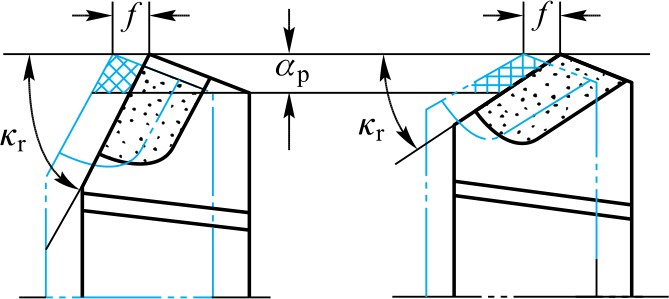
08
减小\(\kappa'_r\)→残留面积↓→\(Ra\)值↓。精加工取5°~10°，粗加工取10°~15°。
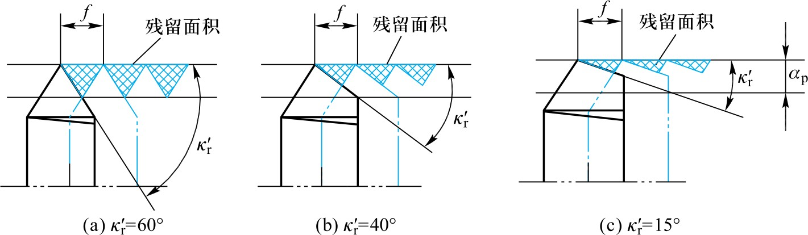
08
+λ_s→切屑流向待加工表面（精加工），刃口强度↓。-λ_s→流向已加工表面（粗加工），刃口强度↑。
粗车λ_s=-5°~0°；精车λ_s=0°~5°；冲击载荷λ_s=-5°~-15°。
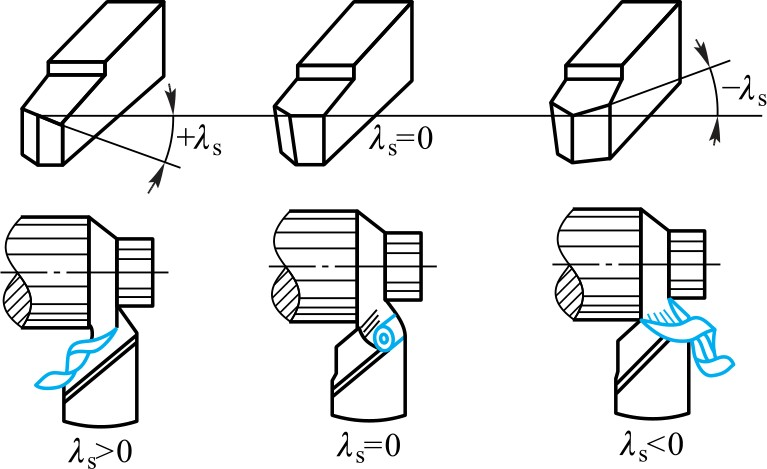
08
刀具寿命方程式：\[v_c T^m = C_0\]
高速钢刀具 \(v_c\) 升高一倍→\(T\) 降为原来的1/86！
最高生产率耐用度 \(T_p\) 低于最低成本耐用度 \(T_c\)，一般多用 \(T_c\)。
参考值：硬质合金车刀T=60~90min；高速钢钻头T=80~120min；齿轮滚刀T=200~300min。
08
刀具耐用度经验公式：\[T = \frac{C_T}{v_c^5 f^{2.25} a_p^{0.75}}\]
\(v_c\)对\(T\)影响最大，\(f\)次之，\(a_p\)最小。
粗加工：先取大\(a_p\)（一次走刀切除）→大\(f\)（据工艺系统刚度）→合适\(v_c\)。
精加工：先保精度→逐渐减小\(a_p\)→小\(f\)→高\(v_c\)。
08
进给量增大→残留面积高度显著增大→表面更粗糙。精加工必选小进给量。
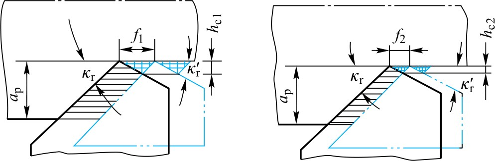
08
切削液具有冷却、润滑、洗涤、排屑和防锈作用。
水溶液：冷却排屑好、润滑差→磨削用。乳化液：冷却清洗好、一定润滑→粗加工及磨削。
切削油：润滑防锈好、冷却差→精加工用。
高速钢刀具耐热差→须用切削液。硬质合金耐热好→一般不用。铸铁/青铜/黄铜等脆性材料→一般不用。
08
切削加工性：在一定的切削条件下，材料被切削加工的难易程度。
最常用衡量指标：\(v_T\)（\(T\)时允许的最大切削速度，通常取\(T=60\)min记为\(v_{60}\)）和相对加工性 \(K_r\)。
以正火45钢的\(v_{60}\)为基准\((v_{60})_j\)：\[K_r = \frac{v_{60}}{(v_{60})_j}\]
\(K_r>1\)→加工性比45钢好；\(K_r<1\)→比45钢差。常用材料分八级。
Machine Tool Basics
09
按加工性质和所用刀具分类是最基本的方法。机床分为11大类：车床(C)、钻床(Z)、镗床(T)、磨床(M)、齿轮加工机床(Y)、螺纹加工机床(S)、刨插床(B)、拉床(L)、铣床(X)、切断机床(G)、其他机床。
按使用性能：通用、专门化、专用。按精度：普通、精密、高精度。按自动化程度：一般、半自动、自动。
09
CW6140B：C=车床，W=万能，6=卧式车床组，1=卧式车床系，40=最大车削直径400mm，B=第二次重大改进。
XK5030：X=铣床，K=数控，5=立式升降台铣床组，0=型别，30=工作台宽度300mm。
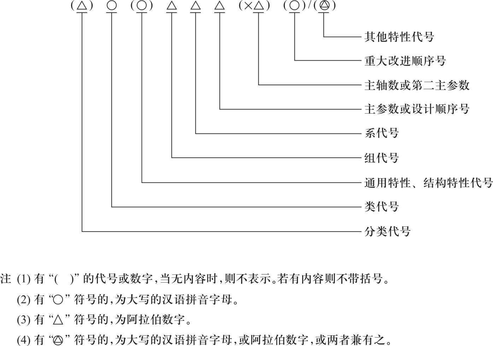
Mechanical Transmission
10
传动方式分机械、液压、电气和气压等，应用最多的是机械传动和液压传动。
带传动：\(i = \frac{n_{II}}{n_I} = \frac{d_1}{d_2}\varepsilon\)（\(\varepsilon\approx0.98\)）。平稳、过载保护，但传动比不准确。
齿轮传动：\(i = \frac{n_{II}}{n_I} = \frac{z_1}{z_2}\)。传动比准确恒定、紧凑可靠、效率高。
蜗杆蜗轮传动：\(i = \frac{z_1}{z_2}\)。传动比大、平稳，但效率低、发热大。
10
齿轮齿条传动：\(S = n\pi d = n\pi m z\)。效率较高，结构紧凑。
丝杠螺母传动：\(S = n P_h\)。传动平稳无噪声，可达高精度。
式中：\(d\)——带轮直径；\(z\)——齿数；\(m\)——模数；\(P_h\)——丝杠导程。
10
将若干传动副按传动轴依次组合起来构成传动链。运动自轴I输入，经带轮→齿轮→蜗杆蜗轮传至轴V：
\[I \to \frac{D_1}{D_2}\varepsilon \to II \to \frac{z_1}{z_2} \to III \to \frac{z_3}{z_4} \to IV \to \frac{z_5}{z_6} \to V\]
传动链总传动比等于所有传动副传动比的乘积：
\[i_{I-V} = i_1 i_2 i_3 i_4 = \frac{n_V}{n_I} = \frac{D_1}{D_2}\varepsilon \cdot \frac{z_1}{z_2} \cdot \frac{z_3}{z_4} \cdot \frac{z_5}{z_6}\]
C6132 Lathe Transmission
11
卧式车床传动系统由主运动传动链和进给运动传动链组成。
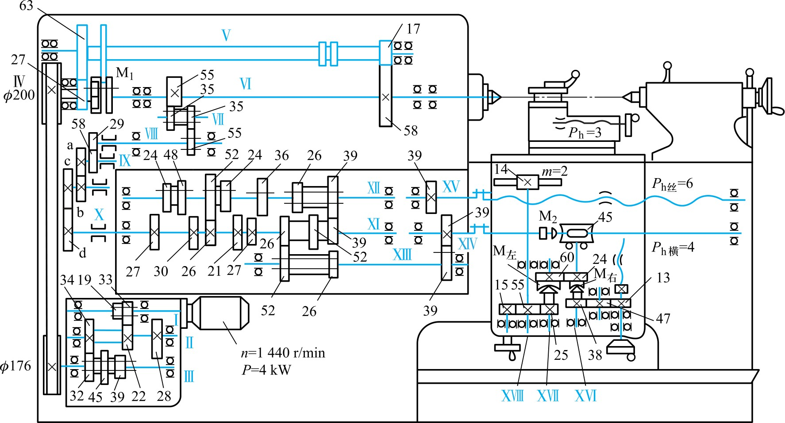
11
电动机（\(n=1440\) r/min, \(P=4\) kW）→变速箱轴I。轴I上双联齿轮使轴II得2种转速；轴III上三联齿轮使输出轴III得6种转速。运动再经带轮φ176/φ200传给主轴箱。
\[\mathrm{I} \to \begin{Bmatrix}33/22\\19/34\end{Bmatrix} \to \mathrm{II} \to \begin{Bmatrix}34/32\\28/39\\22/45\end{Bmatrix} \to \mathrm{III} \to \frac{\phi176}{\phi200}\varepsilon \to \mathrm{IV} \to \begin{Bmatrix}M_1\leftarrow \\ 27/63\end{Bmatrix} \to \mathrm{V} \to \frac{17}{58} \to \text{主轴VI}\]
主轴可得 \(2 \times 3 \times 2 = 12\) 级转速。低速路线经27/63和17/58→6种低速；M₁左移直接连接→6种高速。反转靠电动机反转实现。
11
主轴工作转速：\[n_{\text{主}} = n_{\text{电}} \cdot i_{\text{变}} \cdot i_{\text{带}} \cdot i_{\text{主}}\]
按图示啮合位置（低速路线）：
\[n_{\text{主}} = 1440 \times (\frac{33}{22} \times \frac{34}{32}) \times (\frac{176}{200} \times 0.98) \times (\frac{27}{63} \times \frac{17}{58}) \approx 249\ \text{r/min}\]
其余11种转速：\(n_{\text{最高}} = 1980\) r/min，\(n_{\text{最低}} = 45\) r/min。
11
主轴VI→滑移齿轮变向机构→挂轮箱齿轮29/58及挂轮a/b×c/d→进给箱轴XI：
\[\text{主轴VI} \to \underbrace{\begin{Bmatrix}55/55\\55/35 \times 35/55\end{Bmatrix}}_{\text{变向}} \to \text{VIII} \to \frac{29}{58} \to \text{IX} \to \frac{a}{b}\times\frac{c}{d}_{\text{(挂轮)}} \to \text{XI}\]
11
轴XI→滑动齿轮（5种传动比）→轴XII→增倍机构（4种）→轴XIII。
车螺纹：39/39→丝杠（\(P_h=6\)）→开合螺母→刀架纵向移动。用丝杠保证螺距精度。
车外圆：39/39→光杠→溜板箱蜗杆蜗轮→轴XVI。M_左→齿轮齿条→纵向进给。M_右→横向丝杠（\(P_h=4\)）→横向进给。用光杠减少丝杠磨损。
11
主轴转一周，刀具纵向或横向移动的距离即为进给量：
\[f_{\text{纵}} = i_{\text{换}} \cdot i_{\text{挂}} \cdot i_{\text{进}} \cdot i_{\text{溜}} \cdot \pi z m\]
\[f_{\text{横}} = i_{\text{换}} \cdot i_{\text{挂}} \cdot i_{\text{进}} \cdot i_{\text{溜}} \cdot P_{h\text{横}}\]
\(z=14\)（小齿轮齿数），\(m=2\)（模数），\(P_{h\text{横}}=4\)（横向丝杠导程）。
11
挂轮使用60、65、65、45（车公制螺纹），离合器M_左及M_右分别接合时：
\[f_{\text{纵}} = (\frac{55}{35} \times \frac{35}{55}) \times (\frac{29}{58} \times \frac{60}{65} \times \frac{65}{45}) \times (\frac{26}{52} \times \frac{39}{39} \times \frac{26}{52} \times \frac{39}{39}) \times (\frac{2}{45} \times \frac{24}{60} \times \frac{25}{55}) \times \pi \times 2 \times 14 = 0.118\ \text{mm/r}\]
\[f_{\text{横}} = (\frac{55}{35} \times \frac{35}{55}) \times (\frac{29}{58} \times \frac{60}{65} \times \frac{65}{45}) \times (\frac{26}{52} \times \frac{39}{39} \times \frac{26}{52} \times \frac{39}{39}) \times (\frac{2}{45} \times \frac{38}{47} \times \frac{47}{13}) \times 4 = 0.087\ \text{mm/r}\]
11
进给箱中滑动齿轮（5种）+增倍机构（4种）→变速级数 \(5 \times 4 = 20\) 种。
加之有7组不同传动比的挂轮可任意配换→可车出各种不同螺距的螺纹。
Machine Tool Automation
12
自动化：以机械动作代替人力操作，自动完成特定作业。提高生产率、减少操作人员、降低成本、稳定产品质量。
分两大类：单一品种大批量生产自动化和多品种小批生产自动化。
12
大批量→专用设备、专用流水线和自动线等刚性自动化。如自动机床、组合机床及自动生产线。缺点：产品改变后设备难适应。
多品种小批→数控机床。通用性强、生产准备短、效率高、适应性强。换加工对象只需换数控程序。
数控技术已从NC发展到CNC，形成柔性单元、柔性系统、自动化工厂，正朝智能化、网络化、敏捷制造、虚拟制造方向发展。
总结
切削速度：\(v_c = \frac{\pi d n}{60000}\)（转动），\(v_c = \frac{2L n_r}{60000}\)（往复）。背吃刀量：\(a_p = \frac{d_w-d_m}{2}\)。
刀具耐用度：\(v_c T^m = C_0\)；\(T = \frac{C_T}{v_c^5 f^{2.25} a_p^{0.75}}\)。
传动链总传动比：\(i_{\text{总}} = \prod i_k\)。C6132主轴12级转速（45~1980r/min）。
进给箱20种变速×7组挂轮。\(f_{\text{纵}} = i_{\text{换}} i_{\text{挂}} i_{\text{进}} i_{\text{溜}} \pi z m\)。
总结
① 切削加工：机械加工+钳工。五阶段：粗→半精→精→精密→超精密。
② 刀具材料：红硬性递进——碳素工具钢200°C→高速钢550~600°C→硬质合金800~1000°C→陶瓷1200°C→CBN 1300~1500°C。
③ 切削力：\(F_z\)（80%~90%）+\(F_x\)+\(F_y\)。\(a_p\)加倍→力加倍，\(f\)加倍→力增75%。
④ 切削用量：粗加工→大\(a_p\)→大\(f\)→合适\(v_c\)。精加工→先保精度。切削液：水溶液（磨削）、乳化液（粗）、切削油（精）。
⑤ 机床传动：C6132主轴12级，进给箱20种变速×7组挂轮。车螺纹用丝杠，车外圆用光杠。
⑥ 自动化：大批量→刚性自动化；多品种小批→数控机床（NC→CNC→柔性系统）。